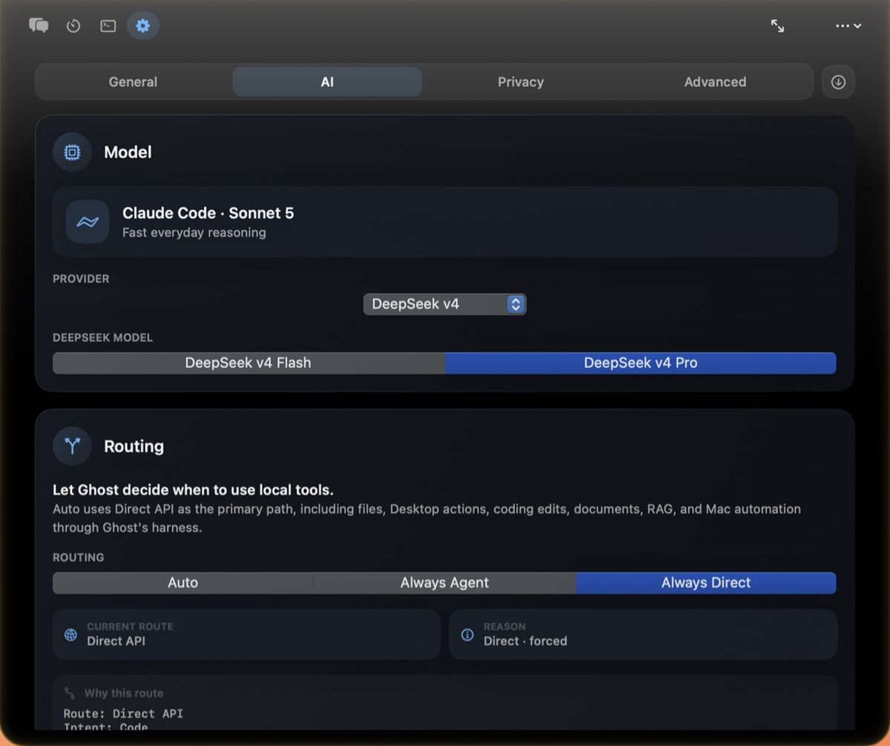
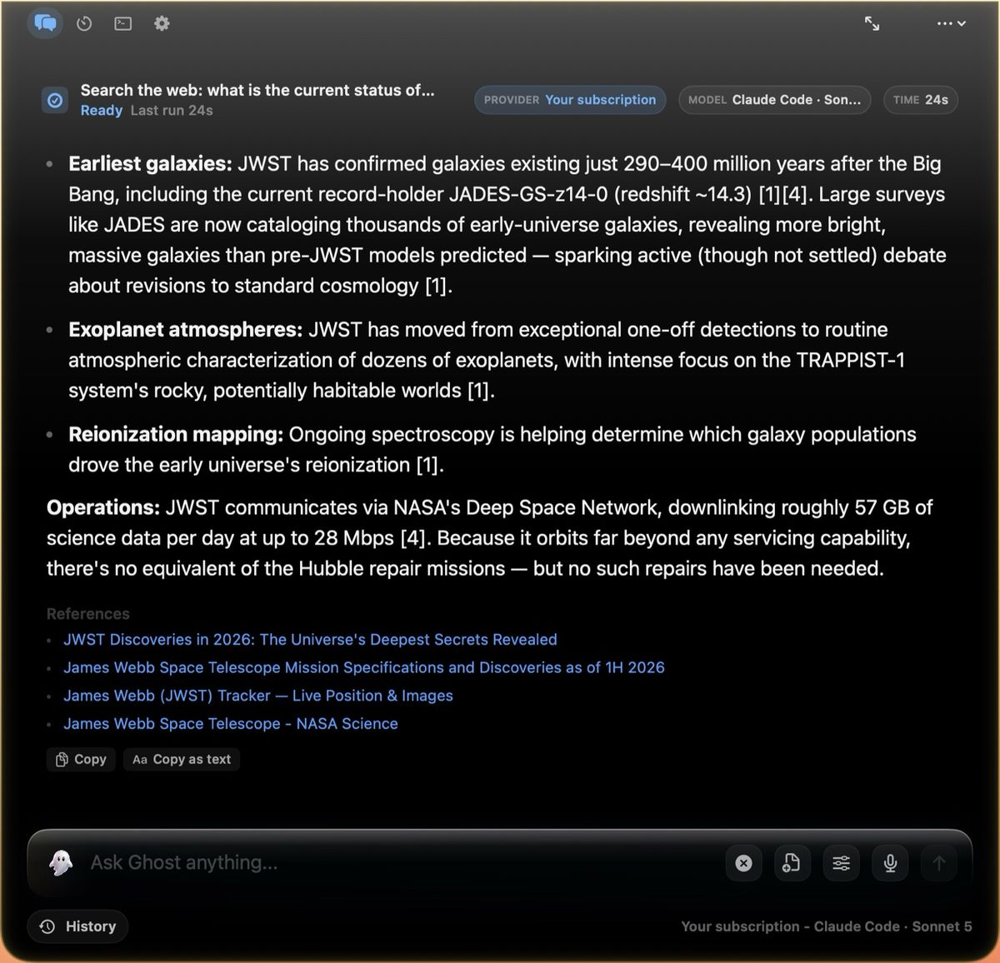
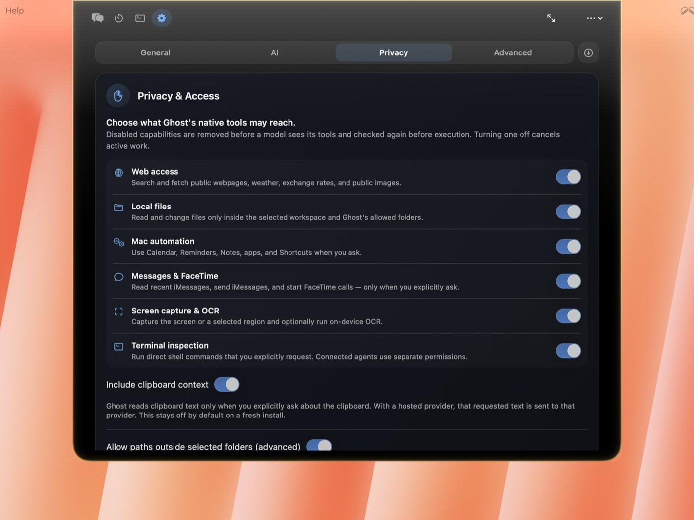
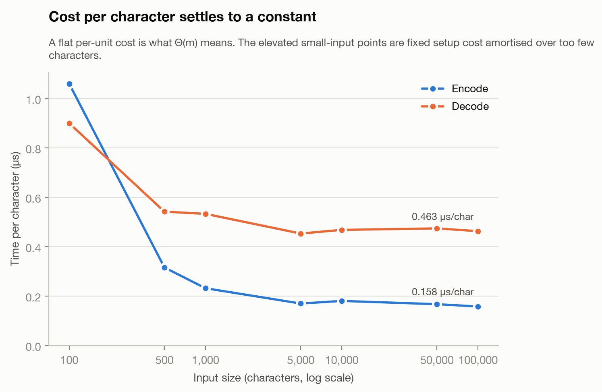
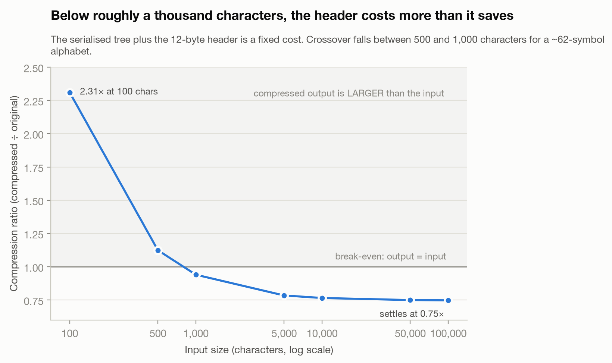

Master of Science in Computer Science (MSCS) student at Northeastern University in San Jose, California, specializing in agentic AI workflows, retrieval-augmented generation (RAG) pipelines, and the integration of frontier and local models.
My focus is the engineering layer around the model: LLM tool calling and function-call harnesses, model routing across hosted APIs and on-device inference, embeddings and semantic search, evaluation and test harnesses, and the permission boundaries that make an agent safe to run on someone's machine. Most of it ships inside Ghost, a signed and notarized macOS AI assistant I designed, built and sell as its sole engineer.
- 76,000+lines of Swift, shipped
- 76permission-gated tools
- 1,094tests, 114 suites
- 8model providers, local and hosted
Skills
- Languages
- Swift, Python, JavaScript, SQL, C, HTML and CSS
- AI systems
- LLM tool-calling harnesses, retrieval-augmented generation (RAG), local inference with LM Studio and Ollama, model routing, prompt-injection boundaries, evaluation and test harnesses
- Frameworks
- SwiftUI, AppKit, React, SQLite with FTS5, Swift Testing, pytest
- Platforms
- macOS (code signing, notarization, Sparkle updates), AWS Lambda and DynamoDB, Stripe, Git and GitHub, Homebrew distribution
- Foundations
- Data structures and algorithms, complexity analysis, data compression, object-oriented design, systems thinking
Projects
Ghost, native macOS AI assistant
A menu-bar assistant that routes prompts to local or hosted models, searches your own documents, and runs real actions on the machine. Shipped, signed, notarized and sold with automatic updates.
A model can claim it wrote the file, moved the event, or read the document, and a thin wrapper will print that claim as fact. Ghost is built the other way around: every capability is a function the app owns, the app checks permissions and path boundaries before it runs, and what returns to the model is the actual result, including the failure.
I am the only engineer and designer on it. That covers the harness and routing layer, the retrieval index, the SwiftUI interface, the AWS licensing service behind Stripe, and the signed release pipeline.
- Try it
- integratedagentics.com/ghost, product page and download
- Releases
- github.com/ryuhemingway/Ghost-App, release notes and documentation. The application source is closed; I am happy to walk through it in an interview.
- Stack
- Swift, SwiftUI, AppKit, SQLite with FTS5, AWS Lambda, DynamoDB, Stripe, Sparkle
- Scale
- 76,307 lines across 179 files · 76 permission-gated tools · 1,094 tests in 114 suites · 8 model providers · 24.6% line coverage overall, 43.5% across non-UI logic. Every figure is regenerated from the working tree, not typed by hand.
- Status
- Shipped and maintained, version 2.7.0, August 2026. 20+ paying users, whose feedback has driven released fixes.
Capability harness
- A local intent classifier runs first, with no network call, and picks one of fourteen intents. That choice sets the route: a local model in LM Studio or Ollama, a hosted API, or the user's own Claude Code or Codex subscription.
- The tool schema is assembled from the permissions actually enabled, so a disabled capability is invisible to the model rather than discouraged. Execution re-checks the same policy.
- Tools carry three risk tiers. Destructive ones always require confirmation, and the dialog receives the real argument JSON rather than the model's description of it. Unknown tool names fail closed.

Small models, full harness
- A small local model is probed on first launch for tool-calling support and given the safest calling convention it can handle, so a model without native function calling still gets the tools.
- The scarce resource is prefill, the tokens a model must read before it can answer. For offline-local providers Ghost sends a focused subset of tools chosen from the prompt rather than the full catalogue of seventy-six, then reuses that subset every round, because changing it mid-loop would invalidate the server's cache of the already-processed prefix and cost more than it saves.
- Where a local server cannot do what a hosted one can, the harness detects it and adapts: a server that cannot stream tool calls falls back to non-streaming for the rest of the run after one failure, and a model that is not vision-capable is refused image prompts rather than asked to hallucinate them.
- The result: gemma-4-e2b running through LM Studio, with no API key and no network, answers with the full tool harness and its permission checks.
Local retrieval
- Roughly thirty document and source-code formats are indexed into a local SQLite database with FTS5, with on-device semantic recall for queries where wording and meaning diverge. Answers return cited, with the source available.
- Match terms are split on non-alphanumerics so no FTS operator survives from user input, and retrieved passages are delineated before the model sees them, under a standing rule that retrieved text is data and never instructions. The index is chmod 0600 on open.
- Retrieval moved off the main thread after profiling showed roughly 250 ms of blocked UI on a typical question, and over a second on the fallback path, before the request had left the machine.

Privacy boundary
- Messages, Notes, Mail and Contacts never enter a cloud model's context: not as an answer, not as background memory, not as a tool result folded back into the conversation.
- The rule lives in one sensitivity classifier and is enforced where every provider's tool results converge, so it holds for providers that do not exist yet.
- The tradeoff is real: acting on those apps requires a local model, and without one Ghost refuses rather than degrading quietly. Every capability ships off by default; API keys live in the Keychain.

Distribution
- Signed and notarized release builds with hardened runtime, distributed through Sparkle with an EdDSA-signed appcast.
- Licensing runs on AWS Lambda and DynamoDB behind Stripe, issuing signed grants the client verifies offline.
- Project metrics are regenerated by CI on every push rather than typed by hand: source and test counts, the registered tool count, and line coverage, published as live badges and a generated METRICS.md so the numbers cannot drift from the code.
Also shipped
- ClaudeMaxing
- A terminal dashboard for Claude Code usage. It reads the session transcripts already on disk and reports per-day tokens, equivalent API cost, model mix and a period-over-period efficiency delta. No account, no API key. Python, MIT licensed, installable from my Homebrew tap. github.com/ryuhemingway/ClaudeMaxing
- Programming
Fundamentals and AI - A terminal curriculum for C, Python, Java and AI engineering principles: 244 lessons that grade by compiling and running your code and showing the real compiler error and an output diff, rather than pattern-matching your source. Works offline; the AI layer explains but can never change whether an exercise passed. Private repository, and I am glad to demo it.
- Homebrew tap
- Formulae and a cask so the tools above install with one command, including a small shell utility that refreshes a Mac's Wi-Fi radio for a new private address. github.com/ryuhemingway/homebrew-tap
Research
Huffman coding, analyzed end to end
A CS5008 research paper on Huffman coding: the optimality proof, a from-scratch Python implementation, and experiments testing the theory's predictions against measured behavior, including the places where they break.
- The complexity analysis keeps two parameters separate: alphabet size n and input length m. Counting and encoding are Θ(m); the merge loop is O(n log n), with the log factor traced to sorting, not merging. Working space is Θ(n), independent of input length. Optimality is argued as a proof rather than asserted, through the exchange argument and optimal substructure.
- Two experiments test the theory against measurement, seeded identically on every run. Encoding settles at 0.158 µs per character and decoding at 0.463 µs, the flat per-character cost exactly what Θ(m) predicts. The guarantee H ≤ L < H + 1 held on all six tested distributions, five within 0.07 bits of the entropy floor.
- The interesting findings are the two failure modes. Below roughly a thousand characters the file grows: the serialized tree it must carry costs more than compression saves. And a codeword cannot be shorter than one bit, so a distribution split nine-to-one compresses to exactly the same size as an even split (1,267 bytes for both), the limitation arithmetic coding was invented to remove.


- Course
- CS5008 Data Structures & Algorithms, Northeastern University, Summer 2026
- Code
- Python, standard library only: huffman_coding.py, test_huffman.py (22 tests), empirical_analysis.py
Background
- 2025–2028
- Northeastern University, Silicon Valley: MS Computer Science, Align program. Graduating April 2028. Coursework in data structures and algorithms, algorithms, foundations of artificial intelligence, object-oriented design and discrete structures.
- 2023–2024
- St. George's University School of Medicine: completed the first year of the MD program before moving to computer science.
- 2021–2022
- UCSF Benioff Children's Hospital Oakland: medical scribe, pediatric orthopedics. Documented 800+ hours of clinical encounters, wrote documentation protocols adopted across the scribe team, trained three incoming scribes.
- 2019–2022
- American Red Cross, Disaster Action Team: disaster relief volunteer, emergency response logistics and case tracking across multiple deployments.
- 2017–2021
- The Ohio State University: BA Psychology. Dean's List.
Why the pivot matters
A year of medical school, and before it a year as a certified scribe in pediatric orthopedics, taught me one thing that transfers directly: record what actually happened, precisely enough that someone else can act on it safely, and notice when the record and the reality have drifted apart. That is what a tool harness does for a language model, and it is why I care about the difference between a claimed result and a verified one.
I started computer science in September 2025 and shipped a paid, notarized macOS application within the first year.
Contact
Available for a Summer 2027 internship, and glad to talk before then about harnesses, retrieval (RAG), evaluation, or getting local models to do useful work.